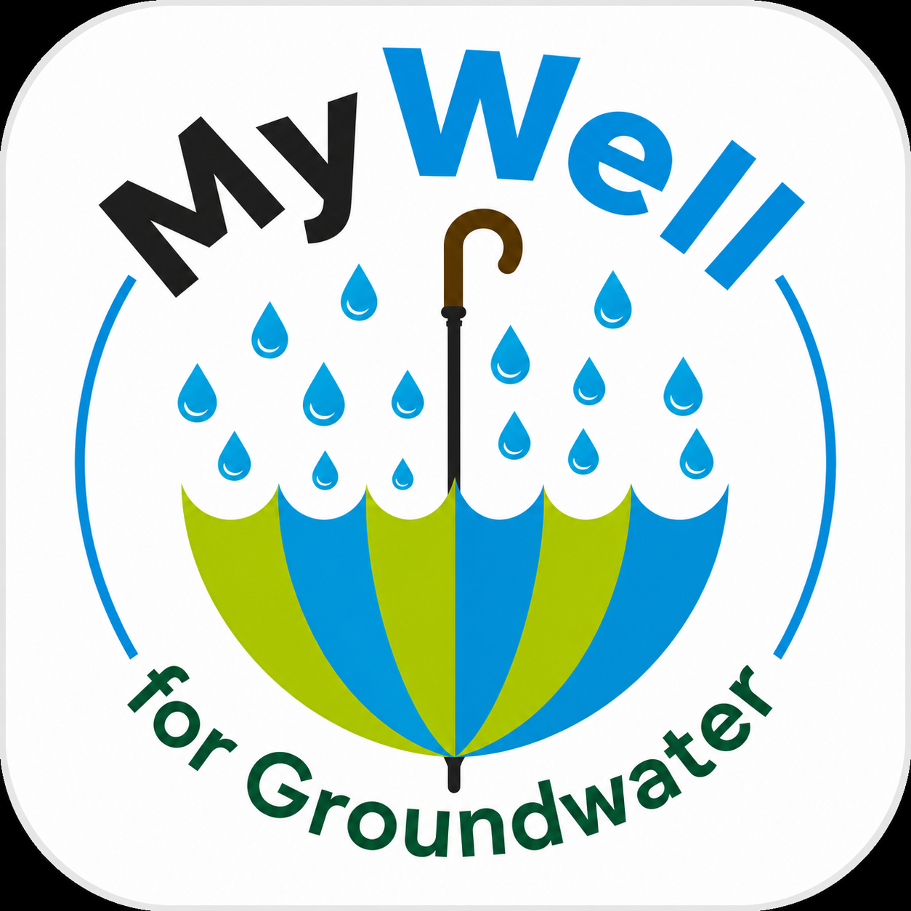
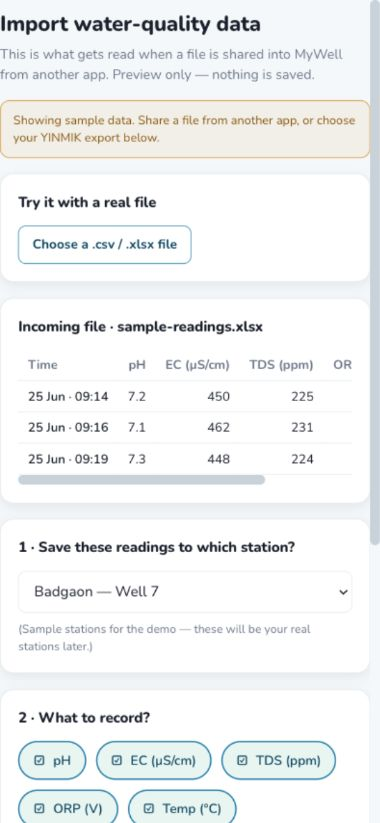
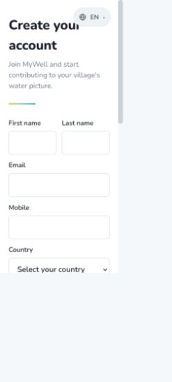

Participatory monitoring
A groundwater-monitoring programme operated and understood by the village itself.
Managing Aquifer Recharge & Sustaining Groundwater Use
MARVI puts groundwater science in the hands of the people who depend on it—farmers, schools, researchers and communities working together for water that lasts.

How can a village understand an invisible shared resource—and decide its future together?
Inside MARVI
Follow the work from village observation to shared groundwater decisions.
The MARVI approach
MARVI brings technical knowledge, community experience and practical monitoring together at village level.
The aim is to improve irrigation-water security and rural livelihoods by making the invisible visible.
Groundwater is often managed one well at a time, even though every bore draws from a connected aquifer. MARVI creates a shared picture through participatory monitoring, aquifer-recharge assessment and village dialogue.
The project works across hydrology, hydrogeology, agronomy, economics and social science. The result is not a report left on a shelf, but knowledge a community can use.
A groundwater-monitoring programme operated and understood by the village itself.
Assess rainwater-harvesting structures and understand what genuinely reaches the aquifer.
Turn readings into conversations about crops, pumping, sharing and long-term water security.


Measure groundwater levels, rainfall, water quality and recharge structures with simple field tools.
Upload observations to MyWell and turn repeated measurements into understandable trends.
Share findings in the local language with farmers, schools and community institutions.
Plan water use, recharge and cooperation with a clearer understanding of the shared aquifer.
Bhujal Jankaars · भूजल जानकार
“Groundwater informed”: local volunteers who connect careful observation with community knowledge and collective action.
A Bhujal Jankaar makes groundwater science legible—well by well, season by season, village by village.
These trained volunteers measure wells, rainfall, water quality and check dams. They interpret local patterns, explain them in the community’s own language and help farmers see that groundwater is both limited and shared.
Groundwater, demystified
Rain moves through soil and rock into an aquifer. Wells reveal only a small window into a connected underground system.


Then / now
In some places, farmers drill beyond 100 metres chasing a falling watertable. Recharge helps, but sustainable use also requires understanding demand.
Water pumped from one well can affect neighbours drawing from the same underground store.
Only part of rain reaches groundwater; soils, geology, land use and structures shape the journey.
A single reading is a snapshot. Repeated measurements reveal depletion, recovery and seasonal rhythm.
The MyWell app
A public-domain, non-profit tool for collecting, viewing and sharing community water observations.

MyWell is now a modern, rebuilt app — turning local observations into clear, visual information for village, regional and wider water management.
Bhujal Jankaars and community members record groundwater levels, rainfall, water quality and check-dam readings against a station, import data from sensors, browse a shared map, and follow current status and long-term trends.


Create an account or sign in to record and manage observations.
Log a groundwater level, rainfall, water quality or check-dam reading against a station.
Bring in water-quality data (pH, EC, TDS) from a file, or connect a YINMIK Bluetooth pen for live readings.
Browse the station map and plot readings over time to see recharge, depletion and seasonal change.
MARVI in the media
Selected journalism and project coverage from the new MARVI media archive.
A profile of Professor Basant Maheshwari and MARVI’s journey from rural India to a wider participatory model.
Read story ↗How Bhujal Jankaars, recharge, MyWell and community decisions became a practical approach.
Read story ↗Village observations and satellite information combine to support more efficient water use.
Read story ↗An introduction to participatory monitoring, recharge, cooperatives and the MARVI approach.
Read story ↗Women Bhujal Jankaars and the social barriers shaping participation in local water decisions.
Read story ↗Farmers use measurements, recharge pits and MyWell to protect wells and inform local choices.
Read story ↗MyWell helps communities record and view groundwater, rainfall, quality and check-dam levels.
Read story ↗Locally generated data helps communities monitor wells used for irrigation and drinking water.
Read story ↗The central role of trained village volunteers in measuring and communicating groundwater.
Read story ↗A memorandum supporting groundwater training, education, research and practical action.
Read story ↗How MARVI’s community monitoring and collaborative data model may transfer across the region.
Read story ↗The MARVI approach, Bhujal Jankaars and resources in English, Hindi and Gujarati.
Read story ↗Archive source: download the complete MARVI media document ↘
Films & field recordings
A curated starting point from the new MARVI video archive—introductions, field stories, training and technical talks.


Archive source: download the complete MARVI video document ↘
The MARVI groundwater game
A whole village draws from one aquifer. Every crop and every turn reveals why groundwater decisions cannot be made alone.

Every player’s choices affect everyone else drawing from the same groundwater store.
Balance high-, moderate- and low-water crops across repeated watering turns.
Start after the monsoon and see whether the village can make its water last five years.
People & partners
Researchers, practitioners, institutions and village volunteers in India and Australia working as one team.


Acknowledgement
MARVI acknowledges the women and men of the Dharta and Meghraj watersheds whose observations, experience and leadership shaped the project.
The original MARVI image archive
Every publicly accessible image recovered from the original MARVI website, preserved locally and arranged as a living visual archive.
Original source: marvi.org.in ↗ · Local source and dimensions are recorded in the image manifest.
MARVI publications
Brochures and books from the project—free to download in English, Hindi and Gujarati.
A short introduction to the MARVI approach: what the project does, where it works and how villages take part.
English ↗Who the Bhujal Jankaars are, how they are trained and what they measure in their own villages.
English ↗A quick guide to the MyWell app—recording groundwater, rainfall, water quality and check-dam readings.
English ↗The main MARVI book: the approach, the methods and what village-level groundwater management looks like in practice.
English ↗Hindi ↗Gujarati ↗A resource book for water literacy—written for villages, schools and anyone learning how groundwater behaves.
English ↗Hindi ↗Gujarati ↗Villagers describe their own wells, seasons and water decisions in their own words.
English ↗Hindi ↗Gujarati ↗Jaldoot—the water messenger—carries groundwater knowledge into everyday village life.
English ↗Hindi ↗Every file opens on Google Drive. Original source: the MARVI publications page ↗.
MARVI tools
An app for recording what a village actually observes, and a game for understanding what those observations mean together.
Bhujal Jankaars and community members record groundwater levels, rainfall, water quality and check-dam readings against a station, then browse the shared map and watch the trends build up over seasons.
A whole village draws from one shared well. Choose crops, take watering turns and watch the watertable answer back—the fastest way to feel why groundwater cannot be managed one farm at a time.